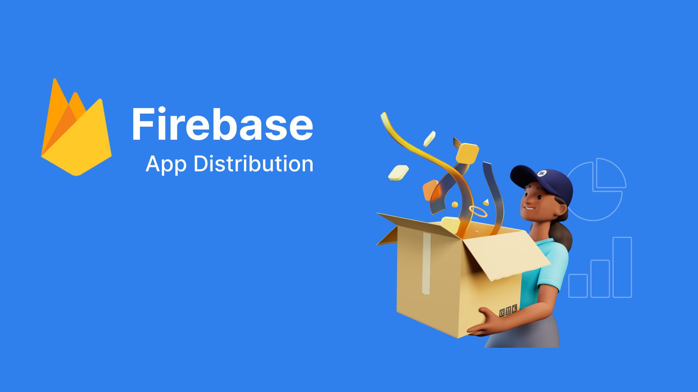

Firebase Distribution
I. Overview
Firebase Distribution is one of the powerful features of the Firebase platform, designed to help developers manage and distribute their mobile applications efficiently and conveniently. Built on the robust Firebase infrastructure, Distribution offers a range of features and benefits for the application deployment process. Firebase Distribution is well-suited for distributing applications to the internal testing team of an organization.
Benefits of using Firebase Distribution include:
Fast and Easy Distribution
- Firebase Distribution helps you distribute your app quickly to test groups without going through official app stores.
Managing User Groups
- Create and manage user groups you want to share the app with. This helps control distribution and gather feedback from key stakeholders for your product.
Version Control
- Firebase Distribution helps you control the version of the distributed app, ensuring that recipients receive the appropriate and consistent version.
II. Demo
Firebase Distribution has many ways to deploy such as through Firebase Console, Firebase CLI, fastlane, Rest API, or with Gradle with Android. In this article, I show you how to simply deploy with Firebase Console.
Android
Flutter -> Build Apk


Add tester email to invite (Can create a group of emails and send to the group).
Add release notes:


Click Get Start to begin downloading the application installation and testing.
iOS:
Similar to Android:
iOS needs to build the ipa and push it to the corresponding console.
However, with iOS, you need to pay attention:
Need to add device udid to developer.apple.com account
In case the device has not been added -> When distributing via email -> Users need to download settings and install. At this time, there will be an email notification that UDID needs to be added, the dev needs to add it again and redistribute the new build to that customer.